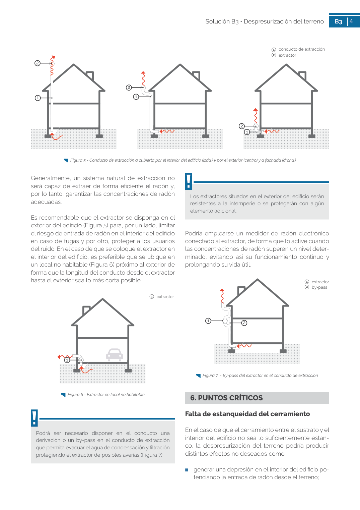

Guia de rehabilitacion frente al radon Fichas · edición sin-fecha · capa guia
Documento GUIA-PDF-f3314b0414fe · SHA-256 del PDF e58e54b822cf4ab00e258f0eb50c0f06a8c04e3730a7f530d224485e2a5bb02e
Página física 55 de 82.
Copia fiel del PDF fuente · Fuente oficial
Ficha de la disposición en la fuente oficial
Créditos y autoría en el PDF fuente. Reproducción con cita de fuente y autores.
Permiso literal: Se permite la reproducción total o parcial del contenido de este nible en el momento de su publicación. No se aceptará por las institu documento siempre y cuando se cite la fuente original
Este documento ha sido elaborado por el Instituto de ciencias
de la construcción Eduardo Torroja (IETcc) bajo la supervisión
de la Dirección General de Agenda Urbana y Arquitectura del
Ministerio de Transportes, Movilidad y Agenda Urbana (MITMA).
El IETcc, perteneciente al Consejo Superior de Investigaciones
Científicas (CSIC), es el centro de investigación en edificación
de referencia en España. La Unidad de Calidad en la Construc
ción del IETcc asesora al MITMA en la elaboración del Código
Técnico de la Edificación que, desde el año 2019, cuenta con la
sección HS6 Protección frente a la exposición al radón.
Dirección y Coordinación:
Ministerio de Transportes, Movilidad y Agenda Urbana
Isabel Marcos Anasagasti
Raquel Lara Campos
Eduardo González de Prado
Instituto de ciencias de la construcción Eduardo Torroja CSIC
Pilar Linares Alemparte
Autoras:
Pilar Linares Alemparte
Sonia García Ortega
Colaboradoras:
Virginia Sánchez Ramos
Karina Angélica García Pardo
Edita:
Centro de Publicaciones Secretaría General Técnica
Ministerio de Transportes, Movilidad y Agenda Urbana©
Entidad colaboradora:
Consejo Superior de Investigaciones Científicas · CSIC
Ministerio de Ciencia e Innovación
Catálogo de publicaciones de la Administración General
del Estado: publicacionesoficiales.boe.es
Centro virtual de publicaciones del Ministerio de Transpor
tes, Movilidad y Agenda Urbana: www.mitma.gob.es
Página web del Código Técnico de la Edificación:
SECRETARÍA GENERAL DE www.codigotecnico.org AGENDA URBANA Y VIVIENDA MINISTERIO GOBIERNO DE TRANSPORTES, MOVILIDAD DE ESPAÑA Y AGENDA URBANA DIRECCIÓN GENERAL DE
Maquetación y diseño gráfico: AGENDA URBANAY ARQUITECTURA
Lapizmente. Estrategia • Diseño Gráfico
CIENCIAFotografía portada: GOBIERNODE ESPAÑA MINISTERIODEE INNOVACIÓN
Sonia García Ortega
Los contenidos o ideas recogidas en este documento pertenecen a
sus autores. Este documento está basado en el conocimiento dispo Se permite la reproducción total o parcial del contenido de este
nible en el momento de su publicación. No se aceptará por las institu documento siempre y cuando se cite la fuente original y a sus
ciones ni los autores implicados responsabilidad de ningún tipo por el autores.
uso de estas recomendaciones. Las figuras tienen carácter ilustrativo
y no deben interpretarse como detalles constructivos.Formato: Texto de la página (Markdown)
4 Solución B3 • Despresurización del terreno B3 4 Generalmente, un sistema natural de extracción no será capaz de extraer de forma eficiente el radón y, por lo tanto, garantizar las concentraciones de radón adecuadas. Es recomendable que el extractor se disponga en el exterior del edificio (Figura 5) para, por un lado, limitar el riesgo de entrada de radón en el interior del edificio en caso de fugas y por otro, proteger a los usuarios del ruido. En el caso de que se coloque el extractor en el interior del edificio, es preferible que se ubique en un local no habitable (Figura 6) próximo al exterior de forma que la longitud del conducto desde el extractor hasta el exterior sea lo más corta posible. 1 extractor 1 Figura 6 - Extractor en local no habitable Podrá ser necesario disponer en el conducto una derivación o un by-pass en el conducto de extracción que permita evacuar el agua de condensación y filtración protegiendo el extractor de posibles averías (Figura 7). Los extractores situados en el exterior del edificio serán resistentes a la intemperie o se protegerán con algún elemento adicional. Podría emplearse un medidor de radón electrónico conectado al extractor, de forma que lo active cuando las concentraciones de radón superen un nivel deter minado, evitando así su funcionamiento continuo y prolongando su vida útil. 1 extractor 2 by-pass 1 Figura 7 - By-pass del extractor en el conducto de extracción 2 6. PUNTOS CRÍTICOS Falta de estanqueidad del cerramiento En el caso de que el cerramiento entre el sustrato y el interior del edificio no sea lo suficientemente estan co, la despresurización del terreno podría producir distintos efectos no deseados como: ■ generar una depresión en el interior del edificio po tenciando la entrada de radón desde el terreno; 1 conducto de extracción 2 extractor 2 1 2 1 Figura 5 - Conducto de extracción a cubierta por el interior del edificio (izda.) y por el exterior (centro) y a fachada (drcha.) 1 2

Datos candidatos: compruebe celdas y notas en el PDF.